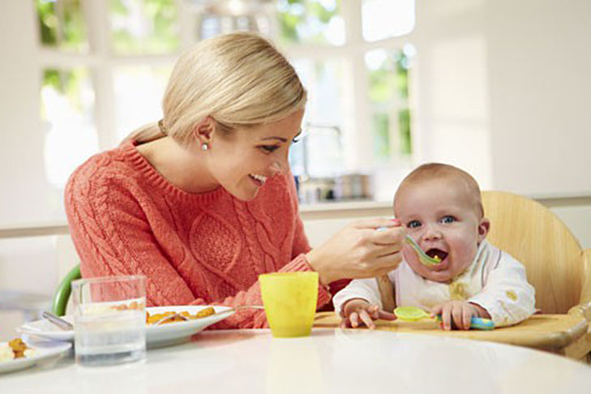
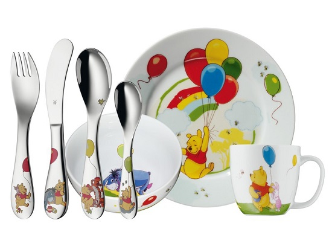
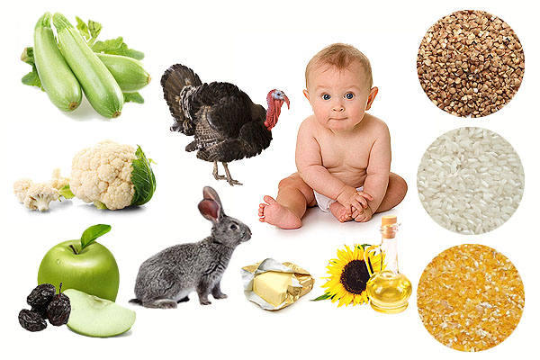
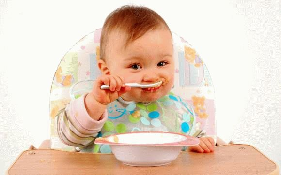

Автор: Анна Соколенко
Чи не кожну маму з наближенням віку дитини до 4-5 місяців починає хвилювати питання: «Як, коли та які продукти вводити в якості прикорму?».
Не важливо, на якому вигодовуванні дитина - на змішаному, грудному чи штучному, - насамперед потрібно зрозуміти, що прикорм — це продукти харчування, які вводять як доповнення до грудного молока (молочної суміші у разі штучного вигодовування) дитині першого року життя. Метою введення прикорму є не нагодувати, а познайомити малюка з дорослою їжею.
ВООЗ наполегливо рекомендує: «З народження і до піврічного віку дитина має перебувати на виключно грудному вигодовуванні. Дитина, молодша від 6 місяців, ще не може повноцінно засвоювати іншу їжу. Введення додаткових продуктів до досягнення дитиною піврічного віку підвищує ризик гострих кишкових інфекцій, зменшує потребу у грудному молоці та тривалість грудного вигодовування».
Починайте вводити нові продукти тоді, коли побачите у дитини хоча б 3 з 5 ознак готовності до введення прикорму:
Існує два найпоширеніші види прикормів: педіатричний та педагогічний. У цій статті ви прочитаєте про педіатричний прикорм. Інформація є відповідною до рекомендацій ВООЗ, МОЗ України та педіатрів. Про педагогічний прикорм ви можете прочитати тут.

Найцікавіше заняття для мами при введенні прикорму - обирати посуд та кухонне приладдя, яке допоможе приготувати їжу для дитини. Усі молоді батьки купують тарілку, ложку та горнятко. Звісно, можна і не купувати спеціальний посуд, а використовувати домашній. Проте мати окремий новий набір – теж цікаво. Бажано, щоб тарілка була глибокою; ложка повинна бути з прямою ручкою (не важливо - пластмасова, металева чи срібна); також важливо використовувати для пиття горнятко чи склянку, а не поїлку з носиком чи трубочкою ( через те, що поїлки негативно впливають на прикладання дитини до грудей). У жодному разі не використовуйте пляшки з сосками для прикорму чи пиття. Цей посуд є створений лише для заміни грудного вигодовування штучним у перші місяці життя дитини, і його використання у процесі ознайомлення з продуктами харчування суперечить принципам введення прикорму.
Для приготування дитячої їжі можна виділити окрему каструлю. Дуже корисно мати вдома мультиварку - вона стане маминою помічницею на всі випадки життя. В ній їжа під час приготування не пригорає; можна готувати без нагляду за пристроєм: піти з малюком гуляти, доки готується страва; також є функція приготування на парі - отже, окремо пароварку купувати не буде потреби. Іншим корисним пристроєм є блендер, з допомогою якого можна довести їжу до потрібної консистенції. Деякі фірми пропонують комбіновані пристрої задля економії часу та посуду.
Стілець для годування обирайте на свій смак (дерев'яний, пластмасовий, трансформер чи звичайне крісло). Важливо, щоб висота сидіння дитини була відповідною до висоти стола, за яким їдять батьки. Це дасть можливість дитині зайняти місце за спільним столом і взяти участь у сімейній трапезі. Зручно, якщо всі поверхні легко миються, адже їх забруднення уникнути неможливо.
Отже, вводимо продукти.
Коли? Завжди першу порцію нового продукту даємо дитині зранку (щоб до вечора побачити, чи немає небажаної реакції), у перший прийом їжі після прокидання; через годину - півтори після останнього годування грудьми, коли у малюка найкращий настрій.
Як? Обов’язково - з ложки. Щодо температури їжі та пиття, то починати можна з комфортної для вас (не гарячої і не холодної) і поступово збільшувати діапазон в обидва боки. Ми починаємо вводити продукти з 1\2 чайної ложки, щодня збільшуючи кількість вдвічі, поступово доводячи до максимальної: 150 г - у 6-7 місяців, 180 г - у 8-9 місяців, 200 г - у 12 місяців. Не хвилюйтеся, якщо малюк не з’їдає всю порцію: це лише орієнтовні цифри. Завжди після прикорму пропонуйте груди, не обмежуючи перебування дитини біля них. Кожен новий продукт можна вводити кожних три дні – щотижня.

Які саме продукти вводити, у якій послідовності та поєднаннях? У 6 місяців (або пізніше, з появою ознак готовності) починаємо прикорм з овочів. Для початку це мають бути найлегші, найменш алергенні продукти: кабачок, цвітна капуста, броколі, гарбуз, патисон. Якщо в час введення прикорму ці овочі несезонні – заздалегідь заготуйте їх у морозилці. Якщо такої можливості немає – купуйте готові пюре в баночці (пам’ятайте про характерний звук відкривання баночки – гарантію якості вмісту). Важливо: ви маєте бути впевнені в натуральності, чистоті продуктів і у тому, що вони вирощені без використання шкідливих препаратів. На мою думку, найкращі овочі для першого прикорму - звісно, з власного городу. Зверніть увагу, що у переліку перших овочів для дитини ми не згадали про улюблену картоплю: вона містить в собі мало корисних речовин, і тому не є основним продуктом прикорму. Буряк та моркву, через їхню грубу клітковину радять вводити після 9 місяців. Бобові можна починати вводити з 9-10 місяців. Коли сформується порція, збагатіть овочі рослинною олією (соняшникова, оливкова, лляна) на кінчику ложки до 1\2 ч.л.
У 6,5 місяців до овочів додаємо м’ясо. Види: кролятина, телятина (яловичина), індичатина, м’ясо перепілки, курятина, нежирна свинина. Не є обов’язковим введення усіх видів м'яса у раціон дитини. Головним критерієм є якість продукту. Якщо у вас є можливість купувати еко продукт певного виду, то і одного його може бути цілком достатньо. Спочатку вводимо дрібно перемелене м’ясо, згодом - парові котлетки чи тефтелі, поступово переходимо на страви зі шматочками м’яса. Важливо: не давати м’ясо в один прийом їжі з молочними продуктами – вони зменшують засвоєння заліза з організмом.
У 7 місяців знайомимо малюка з кашами. Для початку обираємо безглютенові види круп (гречка, рис, кукурудза). Це може бути куплена у відділі дитячого харчування безмолочна каша чи звичайна крупа, перемелена в кавомолці та запарена на воді (або - зварена і подрібнена блендером). Зверніть увагу на спосіб приготування: до року каші готуємо на воді (за бажанням для смаку можна додавати до готової каші грудне молоко чи суміш, якщо дитина на штучному вигодовуванні), після року готові молочні каша на воді чи крупа на молоці. У 8 - 9 місяців можна починати вводити каші, що містять глютен: вівсяну, ячну, пшоняну, житню. Змішані каші можна давати куштувати за умови, що до цього часу дитина вже знайома з усіма видами круп, з яких складається суміш. Манна каша є не найкращим вибором; вона знижує засвоєння заліза організмом дитини. До порції каші додавайте масло, до 1\2 ч.л., щоб збагатити порцію тваринними жирами.

Крім того, з 7 місяців можна починати щодня давати дитині жовток. Починайте з 1\8 жовтка курячого яйця, щотижня збільшуючи кількість вдвічі. Можна додавати жовток курячого чи перепелиного яйця до каші чи овочів. Проте білок яйця рекомендовано вводити лише після року через високу ймовірність виникнення алергічної реакції у дитини.
ВООЗ рекомендує вводити сир у раціон дитини з 6 місяців. Але, зважаючи на велику кількість інших продуктів, які дитина спробує в цьому віці, на мою думку, сир та інші кисломолочні продукти (кефір, йогурт) можна додати до раціону дитини трохи пізніше - в 8 місяців . Ви можете або купити готове дитяче харчування, або виготовити кисломолочні продукти самостійно, використовуючи кип’ячене молоко та закваски. Не бажано купувати готові кисломолочні продукти «з рук», та давати дитині їх без попередньої термічної обробки.
Незбиране молоко вводьте в раціон дитини не раніше, ніж у річному віці, оскільки ризик виникнення захворювань, спровокованих вживанням незбираного молока є вищим, ніж користь від його споживання. Те ж стосується соків (фруктових чи овочевих) - вони є досить сильними подразниками стінок шлунка та кишківника. Що ж до вітамінів - їх дитина у достатній кількості отримує з грудним молоком.
Фрукти можна вводити з 6 місяців. Проте, скуштувавши смачні фрукти, часто малюк відмовляється їсти «несмачні» овочі. Тому радять фруктове пюре домішувати в кашу чи кисломолочні продукти згодом, вже познайомивши малюка зі смаком овочів. Ви можете давати дитині будь-які сезонні та місцеві фрукти. Це можуть бути свіжі фрукти, фрукти з морозилки чи термічно оброблені (печене яблуко чи ягоди з компоту). Не поспішайте з екзотичними плодами – вони можуть викликати небажані реакції.
Також у 8 місяців починайте вводити рибу. Найкраще надати перевагу морським видам (скумбрія, дорадо, сібас). Проте річкові - форель, короп чи щука - теж підходять для дитини.

Важливо навчити малюка самостійно пити. Для цього візьміть склянку чи горнятко, налийте туди ковток води та дайте малюку в руки після їжі. Ми не маємо на меті таким чином напоїти дитину – грудне молоко повністю покриває потребу дитини в рідині. Для нас важливо дати дитині зрозуміти, що можна пити не лише з грудей. Нічого страшного, якщо малюк розіллє все, що ми йому запропонуємо вперше: після багатьох спроб він все ж навчиться правильно доносити до рота горнятко. Найкращою для немовлят є звичайна вода.
Не можна дітям давати водогінну сиру воду; воду з джерел чи криниць, якщо ви не впевнені в її якості та відповідності до санітарно-гігієнічних норм. Якщо ж мама хоче дати компот чи узвар, то напій має обов’язково бути без цукру. Газовану, дистильовану чи мінеральну воду, каву та чай дитині давати теж не можна.
Не потрібно солити чи додавати цукор у страви для прикорму, тим більше не варто додавати приправ. Ці домішки збільшують навантаження на дитячий організм. Будьте обережні, щоб дитині не потрапили в рот горіхи, тверді овочі, горошини, кістки з риби. Мариновані та копчені продукти (зокрема і “дитячі” сосиски) заборонено давати дітям так само, як і фаст–фуд та продукти, які містять консерванти та барвники.
Пам’ятайте про небажані реакції:
У разі виникнення хоча б одного з перелічених симптомів, припиніть давати дитині новий продукт на декілька днів. Коли ознаки зникнуть – спробуйте ще раз, але в меншій кількості. Якщо ж знову виникла реакція – відкладіть введення цього продукту на пізніший час.
Завжди годуйте ніжно, терпляче (діти часто їдять повільно); не примушуйте дитину їсти, хваліть за успіхи, підбадьорюйте, заохочуючи словами «ням-ням-ням, як смачно». Заохочуйте їсти самостійно (вам можуть знадобитися для цього дві ложки). Не ставте за мету згодувати дитині конкретний об’єм страви. Дитина сама вам покаже, коли буде досить. Не бажано використовувати відволікаючі засоби (іграшки, казочки, мультики), аби запхати в дитину їжу. Голодна дитина їстиме без забавляння. Насамкінець, пам’ятайте: прикорм потрібно вводити спокійно та інтуїтивно. Він має приносити у вашу сім’ю радість, а не зайву роботу мамі та стрес дитині.
Корисні посилання:
- Guiding principles for complementary feeding of the breastfed child
- протокол медичного догляду за здоровою дитиною віком до 3 років
- брошура про прикорм (проект "здоров'я матері і дитини")
Текст редагувала Юля Олех